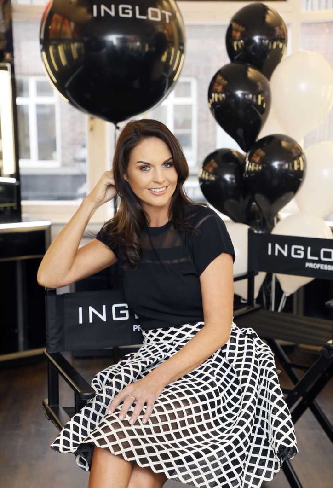

About our Company
Inglot Cosmetics is a Polish cosmetics company headquartered in Przemyśl, south-eastern Poland, specializing in the manufacturing of make-up products. It is considered among the most successful makeup companies in the world which sells its products globally in over 950 boutique stores located in 90 countries. Around 95% of the products that Inglot has on offer are manufactured in a facility located in Przemyśl.
Product images

Ownership
INGLOT Cosmetics is a family run Irish business owned and operated by the Swarbrigg family based in Mullingar, Co. Westmeath. The exciting global brand was brought to the Irish marketplace in July 2009 in the middle of the recession by Mullingar natives, Geraldine, Peter and Jane Swarbrigg who also now oversee the Inglot UK operation. The ever expanding wholesale cosmetics company is now located in over 180 pharmacies nationwide and on many online stockists including Boots, Superdrug, Cloud10 Beauty, Look Fantastic and Beauty Bay. At Inglot we celebrate you and your individuality and create cosmetics accessible to everyone. Known for innovation and creation, inglot offers a diverse range of breakthrough products and beauty must haves and are proudly PETA listed and cruelty free